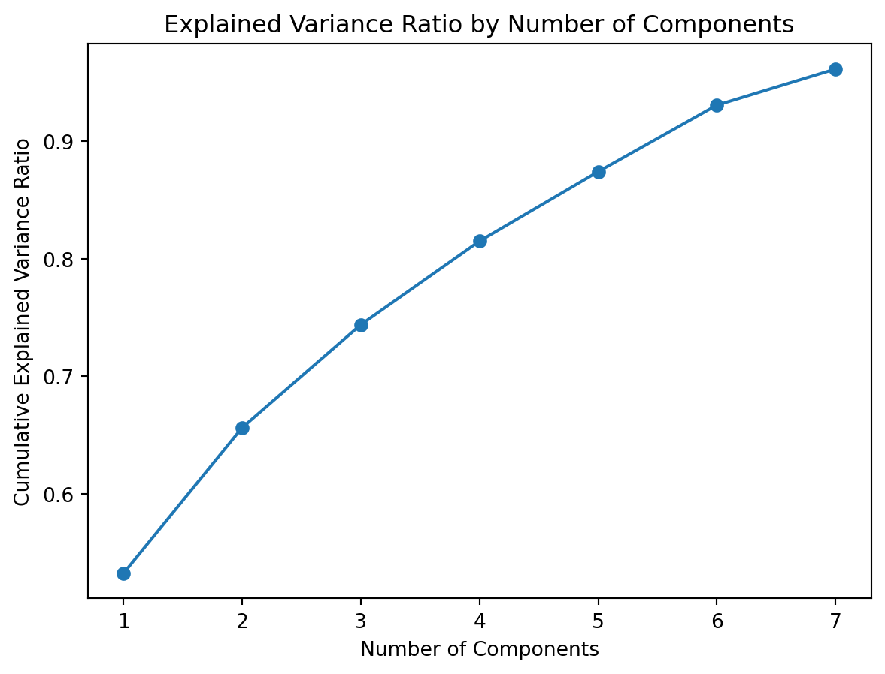

import numpy as np
import pandas as pd
import matplotlib.pyplot as plt
import seaborn as sns
import pylab as py
import statsmodels.api as sm
from sklearn.cluster import KMeans
from sklearn.metrics import silhouette_score
from sklearn.decomposition import PCA
from sklearn.preprocessing import StandardScaler
from sklearn.model_selection import train_test_split, cross_val_score, KFold
from sklearn.metrics import mean_squared_errorProcessing Severity Data with Machine Learning
s_df = pd.read_csv(r"../Data/SeverityData/severity_old.csv")# print(s_df.dtypes)
#
# print("Descriptive Statistics")
# descriptive = s_df.iloc[:, s_df.columns.get_loc('abandonment'):s_df.columns.get_loc(
# 'dissociation_and_paranoid_ideation') + 1].describe()
# print(descriptive)
#
# sm.qqplot(s_df.abandonment, line='45')
# py.show()
#
# py.close()
# sm.qqplot(s_df.interpersonal_relationships, line='45')
# py.show()
#
# py.close()
# sm.qqplot(s_df.identity, line='45')
# py.show()
#
# py.close()
# sm.qqplot(s_df.impulsivity, line='45')
# py.show()
#
# py.close()
# sm.qqplot(s_df.parasuicidal_behavior, line='45')
# py.show()
#
# py.close()
# sm.qqplot(s_df.affective_instability, line='45')
# py.show()
#
# py.close()
# sm.qqplot(s_df.emptiness, line='45')
# py.show()
#
# py.close()
# sm.qqplot(s_df.outbursts_of_anger, line='45')
# py.show()
#
# py.close()
# sm.qqplot(s_df.dissociation_and_paranoid_ideation, line='45')
# py.show()
#
# print("The distributions look clearly non-normal, but that doesn't matter since I will be using Dimensionality "
# "Reduction with PCA, which doesn't require normality in the data.")
#
# plt.hist(s_df.BPDSIsum, bins=8)
# plt.show()
# print("The distribution is skewed right.")
#print("Let's create the categorical variable: BPDSIsumCat.")Using K-Means Clustering to Create Categories
# Assigning the BPDSIsum variable as outcome_variable
original_var = s_df.BPDSIsum
# Scaling the original variable
scaler = StandardScaler()
scaled_var = scaler.fit_transform(original_var.values.reshape(-1, 1))
# Reshaping the variable
reshaped_var = scaled_var.reshape(-1, 1)
# Preparing input data X
X = reshaped_var
# Next, we want to determine the number of clusters
# Setting a range of values for k
k_values = range(1, 11)
# Initializing an empty list to store the WCSS values for each k
wcss = []
# Calculating the WCSS for each value of k
for k in k_values:
kmeans = KMeans(n_clusters=k, n_init='auto', random_state=42)
kmeans.fit(X)
wcss.append(kmeans.inertia_)
# # Plotting the WCSS values
# plt.plot(k_values, wcss, marker='o')
# plt.xlabel('Number of Clusters (k)')
# plt.ylabel('Within-Cluster Sum of Squares (WCSS)')
# plt.title('Scree Plot')
# plt.show()
print("Either 2 or 3 clusters should work.")
print("Let's do 3 clusters.")
# Setting k (number of clusters) to 3
k = 3
# Instantiating KMeans
kmeans = KMeans(n_clusters=k, n_init='auto', random_state=42)
# Fitting the k-means model to the data
kmeans.fit(X)
print("Clusters have been created!\n\n")
# Obtaining the cluster assignments
cluster_labels = kmeans.predict(X)
# Evaluating the clusters
print("Let's evaluate the clusters.")
# Obtaining the within-cluster sum of squares (WCSS)
wcss = kmeans.inertia_
print("WCSS:", wcss)
print("The WCSS shows the compactness of the clusters.")
print("This is not as important to us because we want to create baselines for our BPD severity categories.")
# Calculate the silhouette score
silhouette_avg = silhouette_score(X, cluster_labels)
print("Avg Silhouette Score:", silhouette_avg)
print("This score shows that the clusters have a moderate level of separation and compactness.")
print("Therefore, we will continue with three clusters to create 3 BPD severity categories.")
# Assigning names to each cluster
# They correspond with the severity levels of BPD
cluster_names = {
0: 'Low',
1: 'Medium',
2: 'High'
}
# Creating a new variable with categorical labels based on cluster names
BPDSIsumCat = [cluster_names[label] for label in cluster_labels]
# Creating resulting categorical variable in original dataset!!
s_df['BPDSIsumCat'] = BPDSIsumCat
print(s_df.head())
print("It works! But wait, it seems that the values got mixed")
print("when trying to add BPDSIsumCat back to the original df.")Either 2 or 3 clusters should work.
Let's do 3 clusters.
Clusters have been created!
Let's evaluate the clusters.
WCSS: 465.10284986570167
The WCSS shows the compactness of the clusters.
This is not as important to us because we want to create baselines for our BPD severity categories.
Avg Silhouette Score: 0.5507894499858873
This score shows that the clusters have a moderate level of separation and compactness.
Therefore, we will continue with three clusters to create 3 BPD severity categories.
BPDSIsum abandonment interpersonal_relationships identity impulsivity \
0 27.152760 2.285714 1.875 1.5625 0.454545
1 32.040530 3.000000 1.625 0.9375 0.636364
2 27.934799 0.714286 0.625 3.1250 0.000000
3 42.004167 5.000000 2.000 4.6875 0.000000
4 37.020238 3.428571 1.625 6.2500 0.000000
parasuicidal_behavior affective_instability emptiness \
0 0.000000 7.6 7.25
1 0.000000 8.8 7.50
2 0.153846 5.4 6.50
3 0.000000 7.4 8.75
4 0.000000 9.8 6.25
outbursts_of_anger dissociation_and_paranoid_ideation BPDSIsumCat
0 3.000000 3.125 Low
1 5.166667 4.375 High
2 6.666667 4.750 Low
3 8.166667 6.000 High
4 5.166667 4.500 High
It works! But wait, it seems that the values got mixed
when trying to add BPDSIsumCat back to the original df.# Unscaling to original data
unscaled_variable = scaler.inverse_transform(X)
# Getting min/max values for each cluster
for cluster in range(3):
cluster_values = unscaled_variable[cluster_labels == cluster]
min_value = np.min(cluster_values)
max_value = np.max(cluster_values)
print(f"Cluster {cluster + 1}: Min = {min_value:.2f}, Max = {max_value:.2f}")Cluster 1: Min = 17.25, Max = 31.12
Cluster 2: Min = 0.00, Max = 17.24
Cluster 3: Min = 31.18, Max = 69.31# Creating BPDSIsumCat using thresholds from clusters
s_df['BPDSIsumCat'] = ''
for index, row in s_df.iterrows():
if row['BPDSIsum'] <= 17.24:
s_df.loc[index, 'BPDSIsumCat'] = 'Low'
elif row['BPDSIsum'] <= 31.12:
s_df.loc[index, 'BPDSIsumCat'] = 'Medium'
else:
s_df.loc[index, 'BPDSIsumCat'] = 'High'Using Dimensionality Reduction to Reduce Number of Predictors
# Creating correlation matrix with non-parametric test
corr = s_df.corr(method='spearman')
print("Spearman's Correlation Matrix")
print(corr)
print("\nThere is moderate correlations among the symptom groups.")
# Creating new input matrix X for predictor values
X = s_df.iloc[:, s_df.columns.get_loc('abandonment'):s_df.columns.get_loc(
'dissociation_and_paranoid_ideation')+1].values
y = s_df.loc[:, 'BPDSIsumCat']
# Creating training and testing datasets
X_train, X_test, y_train, y_test = train_test_split(X, y, random_state=42)
# Checking number distribution across the variables
print("Checking distibution of training/testing sets.")
print("\n\nX_train.shape, X_test.shape, y_train.shape, y_test.shape")
print(X_train.shape, X_test.shape, y_train.shape, y_test.shape)
# Initializing PCA and setting number of components to retain
pca = PCA()
pca.n_components = 7
# Fitting the data and transforming it to reduced dimension
X_reduced = pca.fit_transform(X_train)
print("\nFitted data to pca!\n")
# Finding portion of dataset's variance explained by each component
explained_variance_ratio = pca.explained_variance_ratio_
print("The portion of variance explained by each component:", explained_variance_ratio)
# Getting cumulative explained variance to determine how many components to retain
cumulative_variance = np.cumsum(explained_variance_ratio)
print("The cumulative explained variance to determine how many components to retain:", cumulative_variance)
# Plotting cumulative explained variance ratio to determine number of components
plt.plot(range(1, len(cumulative_variance)+1), cumulative_variance, marker='o')
plt.xlabel('Number of Components')
plt.ylabel('Cumulative Explained Variance Ratio')
plt.title('Explained Variance Ratio by Number of Components')
plt.show()
# This plot doesn't help much, so let's try another one
# Plotting scree plot
plt.plot(range(1, len(explained_variance_ratio) + 1), explained_variance_ratio, marker='o')
plt.xlabel('Component Number')
plt.ylabel('Explained Variance Ratio')
plt.title('Scree Plot')
plt.show()
# It appears that the number of components should be around 5
print("We set the number of components to be 5.")
pca.n_components = 5
# Fitting the data and transforming it to reduced dimension (again)
X_reduced = pca.fit_transform(X_train)
print("\nFitted data to pca with 5 components!\n")
# Reconstructing the data after an inverse transformation
X_reconstructed = pca.inverse_transform(X_reduced)
# Calculating reconstruction error rate
# Which compares reconstructed data from reduced dimensions to original data
reconstruction_error = np.mean(np.square(X_train - X_reconstructed))
print("\nReconstructed the data by doing inverse of transformation.")
print("Reconstruction Error:", reconstruction_error)
print("\nTo get a reconstruction error rate below .5, we need at least 5 components.")
print("Getting 6 components significantly reduces the reconstruction error rate.")/var/folders/nz/4s9z5lbj03n0fq55j6hhwbvw0000gn/T/ipykernel_7457/3496317946.py:2: FutureWarning:
The default value of numeric_only in DataFrame.corr is deprecated. In a future version, it will default to False. Select only valid columns or specify the value of numeric_only to silence this warning.
Spearman's Correlation Matrix
BPDSIsum abandonment \
BPDSIsum 1.000000 0.652868
abandonment 0.652868 1.000000
interpersonal_relationships 0.658262 0.510849
identity 0.734629 0.376401
impulsivity 0.566859 0.343312
parasuicidal_behavior 0.589404 0.396111
affective_instability 0.810135 0.466804
emptiness 0.727650 0.343607
outbursts_of_anger 0.605807 0.370235
dissociation_and_paranoid_ideation 0.700842 0.410882
interpersonal_relationships identity \
BPDSIsum 0.658262 0.734629
abandonment 0.510849 0.376401
interpersonal_relationships 1.000000 0.456011
identity 0.456011 1.000000
impulsivity 0.368287 0.408086
parasuicidal_behavior 0.356888 0.396999
affective_instability 0.436894 0.511377
emptiness 0.322085 0.483004
outbursts_of_anger 0.479734 0.348699
dissociation_and_paranoid_ideation 0.400922 0.477937
impulsivity parasuicidal_behavior \
BPDSIsum 0.566859 0.589404
abandonment 0.343312 0.396111
interpersonal_relationships 0.368287 0.356888
identity 0.408086 0.396999
impulsivity 1.000000 0.400807
parasuicidal_behavior 0.400807 1.000000
affective_instability 0.370068 0.448430
emptiness 0.406511 0.350988
outbursts_of_anger 0.293417 0.312667
dissociation_and_paranoid_ideation 0.343085 0.451072
affective_instability emptiness \
BPDSIsum 0.810135 0.727650
abandonment 0.466804 0.343607
interpersonal_relationships 0.436894 0.322085
identity 0.511377 0.483004
impulsivity 0.370068 0.406511
parasuicidal_behavior 0.448430 0.350988
affective_instability 1.000000 0.555383
emptiness 0.555383 1.000000
outbursts_of_anger 0.471390 0.270328
dissociation_and_paranoid_ideation 0.529852 0.454094
outbursts_of_anger \
BPDSIsum 0.605807
abandonment 0.370235
interpersonal_relationships 0.479734
identity 0.348699
impulsivity 0.293417
parasuicidal_behavior 0.312667
affective_instability 0.471390
emptiness 0.270328
outbursts_of_anger 1.000000
dissociation_and_paranoid_ideation 0.349485
dissociation_and_paranoid_ideation
BPDSIsum 0.700842
abandonment 0.410882
interpersonal_relationships 0.400922
identity 0.477937
impulsivity 0.343085
parasuicidal_behavior 0.451072
affective_instability 0.529852
emptiness 0.454094
outbursts_of_anger 0.349485
dissociation_and_paranoid_ideation 1.000000
There is moderate correlations among the symptom groups.
Checking distibution of training/testing sets.
X_train.shape, X_test.shape, y_train.shape, y_test.shape
(2030, 9) (677, 9) (2030,) (677,)
Fitted data to pca!
The portion of variance explained by each component: [0.53279118 0.12370032 0.08741388 0.07091252 0.05901515 0.05651346
0.03069888]
The cumulative explained variance to determine how many components to retain: [0.53279118 0.6564915 0.74390538 0.81481789 0.87383305 0.93034651
0.96104539]
We set the number of components to be 5.
Fitted data to pca with 5 components!
Reconstructed the data by doing inverse of transformation.
Reconstruction Error: 0.44396980547872994
To get a reconstruction error rate below .5, we need at least 5 components.
Getting 6 components significantly reduces the reconstruction error rate.Therefore, we dont use dimensionality reduction with PCA to reduce the number of predictors.
s_df.to_csv("../Data/SeverityData/severity.csv", index=False, header=True)